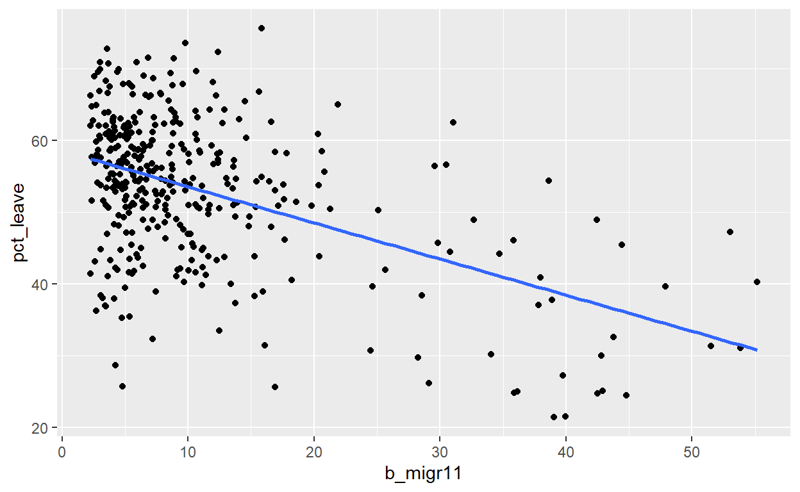

Econometrics for dummies
Consider the dataset Brexit.dta. It contains data on the outcome of the Brexit vote from June 23 this year by local area along with a range of area characteristics. The variable pct_leave records the percentage of voters in an area that voted for leave.
library(haven)
df=read_dta("https://www.dropbox.com/sh/rqmo1hvij1veff0/AAC_4UZXJG9kmImypJXTZ9IOa/brexit.dta?dl=1")
names(df)
[1] "oslaua" "region_code"
[3] "region" "area"
[5] "pct_turnout" "pct_leave"
[7] "pct_rejected" "electorate"
[9] "expectedballots" "verifiedballotpapers"
[11] "votes_cast" "valid_votes"
[13] "remain" "leave"
[15] "rejected_ballots" "no_official_mark"
[17] "writing_or_mark" "unmarked_or_void"
[19] "pop91" "pop11"
[21] "sh_young" "m_migr"
[23] "b_migr" "b_migr11"
[25] "etn11_W" "etn11_AI"
[27] "etn11_AP" "etn11_AB"
[29] "etn11_AC" "etn11_AO"
[31] "etn11_BCA" "etn11_BAF"
[33] "etn11_BO" "etn11_O"
[35] "ni11_sco" "ni11_bri"
[37] "ni11_eng" "ni11_oth"
[39] "ni11_oe" "shni11_sco"
[41] "shni11_bri" "shni11_eng"
[43] "shni11_oth" "shni11_oe"
[45] "citshare" "urate2004"
[47] "urate2005" "urate2006"
[49] "urate2007" "urate2008"
[51] "urate2009" "urate2010"
[53] "urate2011" "urate2012"
[55] "urate2013" "urate2014"
[57] "urate2015" "epop2004"
[59] "epop2005" "epop2006"
[61] "epop2007" "epop2008"
[63] "epop2009" "epop2010"
[65] "epop2011" "epop2012"
[67] "epop2013" "epop2014"
[69] "epop2015" "zage18_24"
[71] "zage45_59" "zage25_29"
[73] "zage60" "dlmig"
[75] "zshi61_ACD" "zshi61_F"
[77] "zshi61_GHI" "zshi61_JKO"
[79] "zshi61_LMN" "zshi71_ACD"
[81] "zshi71_F" "zshi71_GHI"
[83] "zshi71_JKO" "zshi71_LMN"
[85] "zshi81_ACD" "zshi81_F"
[87] "zshi81_GHI" "zshi81_JKO"
[89] "zshi81_LMN" "zshi91_ACD"
[91] "zshi91_F" "zshi91_GHI"
[93] "zshi91_JKO" "zshi91_LMN"
[95] "zshi01_ACD" "zshi01_F"
[97] "zshi01_GHI" "zshi01_JKO"
[99] "zshi01_LMN" "zshi11_ACD"
[101] "zshi11_F" "zshi11_GHI"
[103] "zshi11_JKO" "zshi11_LMN"
[105] "dzshi_ACD" "dzshi_F"
[107] "dzshi_GHI" "dzshi_JKO"
[109] "dzshi_LMN" "zshedu11_noqual"
[111] "zshedu11_l1" "zshedu11_l2"
[113] "zshedu11_l3" "zshedu11_l4"
[115] "wrkage" "age16over"
[117] "zsh11_wrk" Consider the variable b_migr11. It records the share (in %) of foreign born residents in an area (according to the last census, which was in 2011). There is no shortage of politicians claiming that the vote for Brexit was due to immigration particularly after 2005 when Eastern European countries joined the EU and their residents could freely move to countries like Britain. Hence, we would expect there to be a strong effect from the presence of foreigners in an area to the vote outcome. Explore this using the pct_leave and b_migr11 variables using graphical and regression analysis.
Which way is the line of best fit sloping on your scatter plot?
What is the constant (rounded to 3 decimal places)?
What is the slope coefficient (rounded to 3 decimal places)?
library(ggplot2)
ggplot(df, aes(x=b_migr11, y=pct_leave)) + geom_point() + geom_smooth(method = "lm", se = FALSE)

Looking at the scatter plot it seems there is rather a negative relationship between the proportion of foreigners in an area and the support for leave; i.e. exactly the opposite of what one would expect. Regression analysis confirms this:
Call:
lm(formula = pct_leave ~ b_migr11, data = df)
Residuals:
Min 1Q Median 3Q Max
-30.4487 -5.3237 0.6445 5.6518 24.9745
Coefficients:
Estimate Std. Error t value Pr(>|t|)
(Intercept) 58.55342 0.68603 85.35 <2e-16 ***
b_migr11 -0.50359 0.04668 -10.79 <2e-16 ***
---
Signif. codes: 0 '***' 0.001 '**' 0.01 '*' 0.05 '.' 0.1 ' ' 1
Residual standard error: 9.12 on 378 degrees of freedom
(1 observation deleted due to missingness)
Multiple R-squared: 0.2354, Adjusted R-squared: 0.2334
F-statistic: 116.4 on 1 and 378 DF, p-value: < 2.2e-16We see that there is a significant negative relationship. 1 percentage point more foreigners in an area leads to 0.5 percentage point loss in support for the vote to leave.
Various commentators have suggested that it might not be so much the level of immigrants as such, but the experience of a change due to more foreigners in an area that was driving the vote. The variable b_migr contains the share of immigrants in 1991.
Construct a new variable recording the change in the share of immigrants between 2011 and 1992. Explore its impact by extending the regression model from part a).
What is the coefficient on this new variable (rounded to 3 decimal places)?
Is it statistically significant?
We can construct the change in migration shares as:
df["Db_migr"] <- df$b_migr11-df$b_migr
We can then regress
Call:
lm(formula = pct_leave ~ Db_migr + b_migr11, data = df)
Residuals:
Min 1Q Median 3Q Max
-30.2777 -4.4700 0.6883 5.8477 28.5925
Coefficients:
Estimate Std. Error t value Pr(>|t|)
(Intercept) 58.6970 0.6703 87.566 < 2e-16 ***
Db_migr 0.9259 0.2078 4.454 1.11e-05 ***
b_migr11 -1.0987 0.1412 -7.783 6.86e-14 ***
---
Signif. codes: 0 '***' 0.001 '**' 0.01 '*' 0.05 '.' 0.1 ' ' 1
Residual standard error: 8.901 on 377 degrees of freedom
(1 observation deleted due to missingness)
Multiple R-squared: 0.2736, Adjusted R-squared: 0.2698
F-statistic: 71 on 2 and 377 DF, p-value: < 2.2e-16It seems that indeed the change in the migration share has a strong positive and significant impact on the leave share. Notice also that the share of migrants in 2011 now becomes larger as well. This is because the areas with higher increase in foreigners are also the areas with a higher share of foreigners (e.g. like London). Consequently, in the previous univariate regression the b_migr11 coefficient suffered from an upward bias.
\[LeaveShare = \beta_{0}+\beta_{1}MShare_{2011}+\beta_{2}(MShare_{2011}-MShare_{1991})+\epsilon\]
Work out the change in an areaâs leave percentage if the 2011 migrant share would move to back to its level in 1991 in every area.
According to your model from part (b), what would have happened to the vote if there would not have been any change in the share of migrants between 1991 and 2011? Support for Brexit would
In how many areas would the vote flip from a majority support for Brexit to a majority support for Remain?
Note that the impact of changing the 2011 migrant share is a combination of the factors found in the previous section i.e. reducing the migrant share by one percentage point leads to a change in the leave share of \(-(\beta_{1}+\beta_{2})=-(-1.099+0.926)=0.173\) percentage points. In other words, it would seem that a reversal in migrant presence would tend to lead to an increase in the support for Brexit, rather than an increase in the support for remain. Consequently, in no area would be find a flip in the vote from majority support for Brexit to remain.
Can you think of any reason why the estimates in (b) might not adequately reflect the causal impact of immigration on the vote? What are plausible confounding forces?
One reason could be as follows: an important factor that drives immigration is economic opportunity. Hence, it is quite likely that immigration is higher in areas of the country where economic growth was higher. This could mean that there is a positive correlation between the errors and immigration which could imply a downward bias in the estimate of the coefficient on immigration. This in turn could in principle be an explanation for why we find a negative coefficient for the immigration variable (i.e. immigration in 2011 has actually a positive effect on support for leave but we fail to detect it because it is conflated by the more substantial negative effect of economic conditions on the leave vote).
The dataset contains a large number of additional characteristics about a local area. Which variable would you add to your model from part b) to test the alternative explanation mentioned in d)?
We can explore the point made in answer d) by using unemployment as an additional control variable. Below we include both the level of the unemployment rate in 2004 and the change in in the rate between 2011 and 2004.
df["Durate"] <- df$urate2011-df$urate2004
summary(lm(pct_leave~Db_migr + b_migr11 + Durate + urate2004, data=df))
Call:
lm(formula = pct_leave ~ Db_migr + b_migr11 + Durate + urate2004,
data = df)
Residuals:
Min 1Q Median 3Q Max
-27.9548 -4.3850 0.6518 5.1247 19.8195
Coefficients:
Estimate Std. Error t value Pr(>|t|)
(Intercept) 55.7178 1.3368 41.681 < 2e-16 ***
Db_migr 0.9224 0.2165 4.260 2.60e-05 ***
b_migr11 -1.0015 0.1453 -6.894 2.42e-11 ***
Durate 1.0426 0.1781 5.854 1.08e-08 ***
urate2004 -0.3586 0.2610 -1.374 0.17
---
Signif. codes: 0 '***' 0.001 '**' 0.01 '*' 0.05 '.' 0.1 ' ' 1
Residual standard error: 8.393 on 362 degrees of freedom
(14 observations deleted due to missingness)
Multiple R-squared: 0.3543, Adjusted R-squared: 0.3471
F-statistic: 49.65 on 4 and 362 DF, p-value: < 2.2e-16Note that including the unemployment variables does not change the migration variables by much, which suggests that the economic conditions are not conflating the results on immigration. That said, note that the net negative effect of b_migr11 (coefficient for b_migr11+ coefficient for Db_migr) is slightly less negative than in in (b) which would be consistent with a slight conflation of the immigration effect by economic factors.
Also, note that the change in the unemployment rate has a high and significant coefficient. If the unemployment rate goes up by 1 percentage point the support for leave goes up by about 1 percentage point as well. Hence, it might be more useful to consider economic conditions as a factor that has been driving the vote rather than recent immigration.
The dataset data/prod.dta contains production data for various companies from 1979 to 1986.
library(haven)
prod=read_dta("https://www.dropbox.com/sh/rqmo1hvij1veff0/AACD9OHn_yCnKFAX7hbEASVha/prod.dta?dl=1")
names(prod)
[1] "year" "id" "go" "m" "l"
[6] "k" "sic3dig" "countyear" "va" Examine the data using a Cobb-Douglas production function in terms of value added; i.e. regress ln value added on ln capital and ln labour (va contains the value added, k the capital stock and l labour all not in logs). On the basis of the regression examine the hypothesis that the production function has constant returns to scale (i.e. the labour and capital coefficients would add ot 1).
The hypothesis is
Call:
lm(formula = log(va) ~ log(k) + log(l) + year, data = prod)
Residuals:
Min 1Q Median 3Q Max
-2.7397 -0.4336 0.0305 0.4477 2.1339
Coefficients:
Estimate Std. Error t value Pr(>|t|)
(Intercept) 2.985474 0.128579 23.219 <2e-16 ***
log(k) 0.346498 0.021273 16.288 <2e-16 ***
log(l) 0.938894 0.038330 24.495 <2e-16 ***
year80 0.036981 0.082998 0.446 0.6560
year81 0.141971 0.083009 1.710 0.0875 .
year82 0.092141 0.082992 1.110 0.2671
year83 0.005795 0.082994 0.070 0.9443
year84 0.035601 0.083003 0.429 0.6681
year85 -0.061518 0.083138 -0.740 0.4595
year86 0.108689 0.083340 1.304 0.1924
---
Signif. codes: 0 '***' 0.001 '**' 0.01 '*' 0.05 '.' 0.1 ' ' 1
Residual standard error: 0.7091 on 1158 degrees of freedom
Multiple R-squared: 0.7846, Adjusted R-squared: 0.7829
F-statistic: 468.6 on 9 and 1158 DF, p-value: < 2.2e-16library(car)
library(plm)
linearHypothesis(mod1,"log(k)+log(l)=1",vcov=vcovHC)
Linear hypothesis test
Hypothesis:
log(k) + log(l) = 1
Model 1: restricted model
Model 2: log(va) ~ log(k) + log(l) + year
Note: Coefficient covariance matrix supplied.
Res.Df Df F Pr(>F)
1 1159
2 1158 1 136.16 < 2.2e-16 ***
---
Signif. codes: 0 '***' 0.001 '**' 0.01 '*' 0.05 '.' 0.1 ' ' 1We turn year into a categorical (factor) variable. Treating year as a categorical variable will calculate effect of each individual year - i.e. what impact on the target variable was on average in a given year.
We then go on to test the hypothesis that the production function has constant returns to scale, formulated as log(k)+log(l)=1. We want to tell R to use robust standard errors and therefore we need to include vcov=vcovHC. We introduce this to deal with heteroskedasticity.
We need to install and load two packages (package âcarâ, which includes the function linearHypothesis and package âplmâ, which includes our robust covariance matrix estimators, including vcovHC).
Constant returns are clearly rejected.
The variable sic3dig contains an industry classifier which groups the firms into 17 industries.
Why might it be useful to include industry classifiers in order to estimate the production function better?
Re-estimate the production function controlling for industry. Does your assessment about constant returns to scale change based on this new estimate?
Typically the residual from a production function estimation is interpreted as productivity. However, it is plausible that more productive firms will want to employ more production factors. This might lead to a correlation between residuals and the explanatory variables which could lead to biases. A big part of that might come from variations between sectors; i.e. some sectors are just more productive and profitable and those will also be the sectors that attract more capital and other production factors.
Call:
lm(formula = log(va) ~ log(k) + log(l) + year + sic3dig, data = prod)
Residuals:
Min 1Q Median 3Q Max
-2.88207 -0.40007 0.05372 0.44165 1.92283
Coefficients:
Estimate Std. Error t value Pr(>|t|)
(Intercept) 3.216195 0.134458 23.920 < 2e-16 ***
log(k) 0.285436 0.022608 12.625 < 2e-16 ***
log(l) 0.995616 0.038889 25.602 < 2e-16 ***
year80 0.036104 0.077877 0.464 0.643019
year81 0.142005 0.077888 1.823 0.068537 .
year82 0.094111 0.077871 1.209 0.227085
year83 0.007594 0.077874 0.098 0.922338
year84 0.032116 0.077884 0.412 0.680161
year85 -0.071111 0.078036 -0.911 0.362352
year86 0.093891 0.078264 1.200 0.230517
sic3dig321 -0.107406 0.079196 -1.356 0.175304
sic3dig322 0.155755 0.079807 1.952 0.051224 .
sic3dig323 0.847057 0.239067 3.543 0.000411 ***
sic3dig324 0.034193 0.124769 0.274 0.784093
sic3dig331 -0.175586 0.085783 -2.047 0.040900 *
sic3dig332 0.260137 0.085636 3.038 0.002438 **
sic3dig341 0.733683 0.176477 4.157 3.46e-05 ***
sic3dig342 0.035795 0.095630 0.374 0.708245
sic3dig351 1.297901 0.175805 7.383 2.98e-13 ***
sic3dig352 0.597134 0.102678 5.816 7.84e-09 ***
sic3dig355 0.509182 0.237587 2.143 0.032313 *
sic3dig356 0.195583 0.095147 2.056 0.040050 *
sic3dig369 -0.239435 0.101992 -2.348 0.019065 *
sic3dig371 0.771417 0.139946 5.512 4.38e-08 ***
sic3dig381 0.174591 0.071427 2.444 0.014663 *
sic3dig383 0.367663 0.140038 2.625 0.008769 **
---
Signif. codes: 0 '***' 0.001 '**' 0.01 '*' 0.05 '.' 0.1 ' ' 1
Residual standard error: 0.6653 on 1142 degrees of freedom
Multiple R-squared: 0.813, Adjusted R-squared: 0.8089
F-statistic: 198.5 on 25 and 1142 DF, p-value: < 2.2e-16linearHypothesis(mod2, "log(k)+log(l)=1", vcov=vcovHC)
Linear hypothesis test
Hypothesis:
log(k) + log(l) = 1
Model 1: restricted model
Model 2: log(va) ~ log(k) + log(l) + year + sic3dig
Note: Coefficient covariance matrix supplied.
Res.Df Df F Pr(>F)
1 1143
2 1142 1 130.6 < 2.2e-16 ***
---
Signif. codes: 0 '***' 0.001 '**' 0.01 '*' 0.05 '.' 0.1 ' ' 1i.e. the test continues to be rejected. Consequently, we donât find constant returns to scale.
Which of the 17 industries has the largest number of observations?
Lets pick the first two industries that appear in our table, 311 and 321. For each of the two industries separately, estimate a Cobb-Douglas production function.
Would you say the functions are very different in the two industries?
table(prod$sic3dig)
311 321 322 323 324 331 332 341 342 351 352 355 356 369 371 381 383
400 88 88 8 32 72 72 16 56 16 48 8 56 48 24 112 24 The table reveals that the industry with the largest number of observations is 311.
library(dplyr)
mod311=lm(log(va)~log(k)+log(l)+year, prod %>% filter(sic3dig=="311"))
summary(mod311)
Call:
lm(formula = log(va) ~ log(k) + log(l) + year, data = prod %>%
filter(sic3dig == "311"))
Residuals:
Min 1Q Median 3Q Max
-2.30248 -0.41505 0.07536 0.45801 1.73235
Coefficients:
Estimate Std. Error t value Pr(>|t|)
(Intercept) 2.56445 0.20804 12.327 < 2e-16 ***
log(k) 0.41456 0.04113 10.079 < 2e-16 ***
log(l) 0.80244 0.07461 10.756 < 2e-16 ***
year80 0.08684 0.13017 0.667 0.505074
year81 0.26948 0.13017 2.070 0.039090 *
year82 0.39208 0.13033 3.008 0.002798 **
year83 0.23738 0.13065 1.817 0.070003 .
year84 0.22519 0.13086 1.721 0.086078 .
year85 0.07980 0.13209 0.604 0.546113
year86 0.48876 0.13271 3.683 0.000263 ***
---
Signif. codes: 0 '***' 0.001 '**' 0.01 '*' 0.05 '.' 0.1 ' ' 1
Residual standard error: 0.6508 on 390 degrees of freedom
Multiple R-squared: 0.8318, Adjusted R-squared: 0.8279
F-statistic: 214.2 on 9 and 390 DF, p-value: < 2.2e-16
Call:
lm(formula = log(va) ~ log(k) + log(l) + year, data = prod %>%
filter(sic3dig == "321"))
Residuals:
Min 1Q Median 3Q Max
-1.12790 -0.32740 0.02603 0.38229 0.95998
Coefficients:
Estimate Std. Error t value Pr(>|t|)
(Intercept) 3.61053 0.41939 8.609 6.19e-13 ***
log(k) 0.20105 0.07984 2.518 0.0138 *
log(l) 1.04942 0.13980 7.507 8.45e-11 ***
year80 0.16420 0.22541 0.728 0.4685
year81 0.17994 0.22527 0.799 0.4268
year82 0.17906 0.22650 0.791 0.4316
year83 0.22520 0.22623 0.995 0.3226
year84 -0.03102 0.22546 -0.138 0.8909
year85 -0.16535 0.22671 -0.729 0.4680
year86 0.26596 0.22574 1.178 0.2423
---
Signif. codes: 0 '***' 0.001 '**' 0.01 '*' 0.05 '.' 0.1 ' ' 1
Residual standard error: 0.5282 on 78 degrees of freedom
Multiple R-squared: 0.8231, Adjusted R-squared: 0.8027
F-statistic: 40.32 on 9 and 78 DF, p-value: < 2.2e-16In each case the labor coefficient is larger than the capital coefficient. However, the numbers are not necessarily very close. In the case of sector 321 the capital coefficient is only half of the coefficient for sector 311. Still, to make sure they are statistically different itâs good to do a formal test which is the next question.
Conduct a hypothesis test to compare the two functions formally. Note, that for that you need to estimate both functions using a single regression model.
Are the coefficients statistically different from zero?
Could they be jointly significant?
mod_inter=lm(log(va)~log(k)+log(l)+sic3dig*log(k)+sic3dig*log(l)+sic3dig+year, prod %>% filter(sic3dig=="311"|sic3dig=="321"))
summary(mod_inter)
Call:
lm(formula = log(va) ~ log(k) + log(l) + sic3dig * log(k) + sic3dig *
log(l) + sic3dig + year, data = prod %>% filter(sic3dig ==
"311" | sic3dig == "321"))
Residuals:
Min 1Q Median 3Q Max
-2.28294 -0.41035 0.05918 0.41383 1.74454
Coefficients:
Estimate Std. Error t value Pr(>|t|)
(Intercept) 2.60151 0.19647 13.242 < 2e-16 ***
log(k) 0.40941 0.03950 10.364 < 2e-16 ***
log(l) 0.81146 0.07167 11.322 < 2e-16 ***
sic3dig321 0.86072 0.49179 1.750 0.080733 .
year80 0.10020 0.11394 0.879 0.379609
year81 0.25290 0.11392 2.220 0.026894 *
year82 0.35202 0.11414 3.084 0.002161 **
year83 0.23322 0.11434 2.040 0.041942 *
year84 0.17799 0.11443 1.555 0.120516
year85 0.03436 0.11543 0.298 0.766105
year86 0.44649 0.11578 3.856 0.000131 ***
log(k):sic3dig321 -0.18972 0.09998 -1.898 0.058355 .
log(l):sic3dig321 0.20729 0.17579 1.179 0.238910
---
Signif. codes: 0 '***' 0.001 '**' 0.01 '*' 0.05 '.' 0.1 ' ' 1
Residual standard error: 0.6291 on 475 degrees of freedom
Multiple R-squared: 0.8316, Adjusted R-squared: 0.8274
F-statistic: 195.5 on 12 and 475 DF, p-value: < 2.2e-16coeftest(mod_inter, vcov=vcovHC)
t test of coefficients:
Estimate Std. Error t value Pr(>|t|)
(Intercept) 2.601515 0.210652 12.3498 < 2.2e-16 ***
log(k) 0.409406 0.048051 8.5202 < 2.2e-16 ***
log(l) 0.811456 0.087765 9.2458 < 2.2e-16 ***
sic3dig321 0.860720 0.456747 1.8845 0.0601137 .
year80 0.100202 0.108075 0.9272 0.3543179
year81 0.252903 0.106088 2.3839 0.0175224 *
year82 0.352021 0.102787 3.4248 0.0006687 ***
year83 0.233218 0.112821 2.0672 0.0392611 *
year84 0.177992 0.114145 1.5594 0.1195786
year85 0.034356 0.117276 0.2929 0.7696888
year86 0.446495 0.109287 4.0855 5.161e-05 ***
log(k):sic3dig321 -0.189720 0.098068 -1.9346 0.0536363 .
log(l):sic3dig321 0.207288 0.178478 1.1614 0.2460545
---
Signif. codes: 0 '***' 0.001 '**' 0.01 '*' 0.05 '.' 0.1 ' ' 1We continue to work with a subset of our data. We introduce interaction terms into our model â multiplying our logged labor variable with the sector code and the logged capital variable with the sector code. The t-test on these interaction terms is what we are interested in. Remember interaction terms should be interpreted as âeffect modifiersâ - we are interested in whether the industry modifies the relationship between labour/capital and value added.
As before, we are concerned about heteroskedascity. We therefore perform a coeftest, specifying we want robust standard errors. It turns out the coefficients are not statistically different; i.e. the t-tests for the interaction coefficients are not significantly different from zero. However, it could still be the case that they are jointly significant (e.g. there could be a high degree of collinearity in the interaction variables.)
We can examine that with the linearHypothesis command:
linearHypothesis(mod_inter, c("log(k):sic3dig321=0","log(l):sic3dig321=0"), vcov=vcovHC)
Linear hypothesis test
Hypothesis:
log(k):sic3dig321 = 0
log(l):sic3dig321 = 0
Model 1: restricted model
Model 2: log(va) ~ log(k) + log(l) + sic3dig * log(k) + sic3dig * log(l) +
sic3dig + year
Note: Coefficient covariance matrix supplied.
Res.Df Df F Pr(>F)
1 477
2 475 2 2.4557 0.0869 .
---
Signif. codes: 0 '***' 0.001 '**' 0.01 '*' 0.05 '.' 0.1 ' ' 1This suggests that the production function for sector 321 is weakly significantly different from that in sector 311.
Re-estimate your extended model from d) by allowing for fixed effects.
Does this change your assessment concerning the hypothesis that the production functions are identical in the two industries?
mod_fe=plm(log(va)~log(k)+log(l)+sic3dig*log(k)+sic3dig*log(l)+sic3dig+year, index=c("id","year"),data=prod %>% filter(sic3dig=="311"|sic3dig=="321"), model="within")
summary(mod_fe)
Oneway (individual) effect Within Model
Call:
plm(formula = log(va) ~ log(k) + log(l) + sic3dig * log(k) +
sic3dig * log(l) + sic3dig + year, data = prod %>% filter(sic3dig ==
"311" | sic3dig == "321"), model = "within", index = c("id",
"year"))
Balanced Panel: n = 61, T = 8, N = 488
Residuals:
Min. 1st Qu. Median 3rd Qu. Max.
-1.5714319 -0.2166290 0.0028078 0.2322813 1.3800158
Coefficients:
Estimate Std. Error t-value Pr(>|t|)
log(k) 0.308997 0.134568 2.2962 0.022160 *
log(l) 0.359801 0.118239 3.0430 0.002491 **
year80 0.102850 0.079814 1.2886 0.198247
year81 0.251459 0.079807 3.1508 0.001746 **
year82 0.344801 0.080830 4.2657 2.469e-05 ***
year83 0.230999 0.082761 2.7911 0.005494 **
year84 0.183991 0.085504 2.1518 0.031985 *
year85 0.079124 0.090678 0.8726 0.383396
year86 0.477635 0.094902 5.0329 7.204e-07 ***
log(k):sic3dig321 0.238587 0.236232 1.0100 0.313097
log(l):sic3dig321 0.138285 0.204708 0.6755 0.499719
---
Signif. codes: 0 '***' 0.001 '**' 0.01 '*' 0.05 '.' 0.1 ' ' 1
Total Sum of Squares: 96.276
Residual Sum of Squares: 80.641
R-Squared: 0.1624
Adj. R-Squared: 0.019445
F-statistic: 7.33249 on 11 and 416 DF, p-value: 1.6864e-11linearHypothesis(mod_fe, c("log(k):sic3dig321=0","log(l):sic3dig321=0"), vcov=vcovHC)
Linear hypothesis test
Hypothesis:
log(k):sic3dig321 = 0
log(l):sic3dig321 = 0
Model 1: restricted model
Model 2: log(va) ~ log(k) + log(l) + sic3dig * log(k) + sic3dig * log(l) +
sic3dig + year
Note: Coefficient covariance matrix supplied.
Res.Df Df Chisq Pr(>Chisq)
1 418
2 416 2 1.5389 0.4633We continue to work with the same subset of our data but introduce a different model here. Instead of OLS regression, we use a fixed effects panel regression. This allows us to control for differences between firms that we cannot observe by including firm-specific dummies (that is why it is sometimes called Least Squares Dummy Variable Model).
As for lm() we have to specify the dependent and independent variables and the data to be used in our call of plm(). We also need to include a vector of names of entity and time ID variables to the argument index. Since the fixed effects estimator is also called the within estimator, we set model = âwithinâ.
It seems that once we allow for fixed effects the interaction coefficients are no longer significant even in a joint significance test.